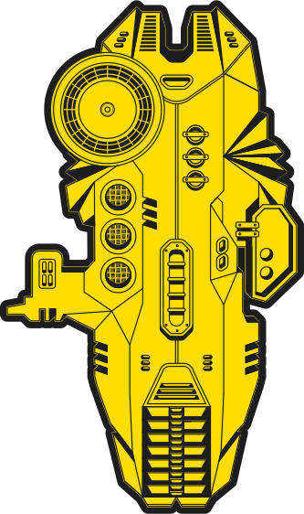

Taufe am
30. Juni 2017
19 Uhr
30. Juni 2017
19 Uhr
Für all die Hüslar, Macher, Denker, technologische Randgruppen aller Art, Mitstreiter und Digitalistas da draußen.
Am 30. Juni wird das digitale Mutterschiff Vorarlbergs getauft. Es gibt kurze Reden und ganz viel Sinn. Unterhaltung und die Community, die wird auch da sein.